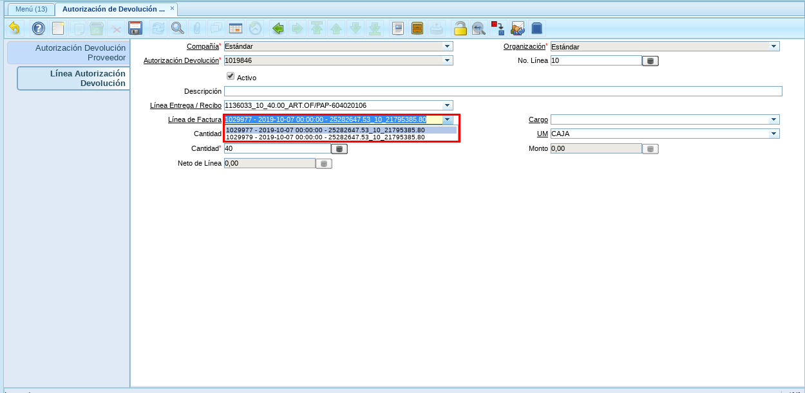
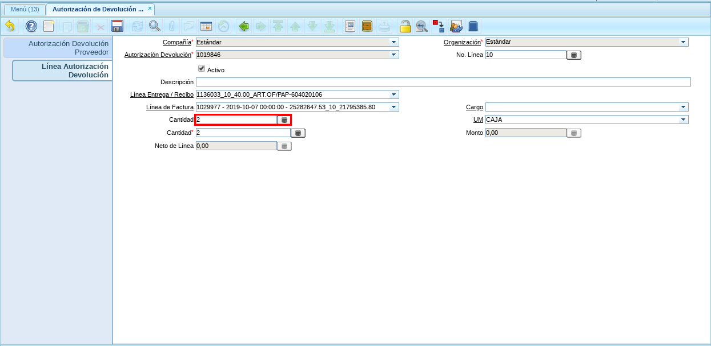

Autorización de Devolución a Proveedor¶
Realizar el proceso regular de elaboración del documento “Autorización de Devolución a Proveedor”.
Anteriormente, al seleccionar la línea de recepción con más de una factura asociada, ADempiere generaba el siguiente error.

Imagen 1. Error al ingresar línea de entrega / recibo¶
Note
El error es generado porque el documento de recepción posee más de un documento de factura asociado al mismo. ERPyA agregó un nuevo campo llamado “Línea de Factura”, para que los usuarios puedan generar de manera exitosa el documento “Autorización de Devolución a Proveedor” desde una recepción con más de una factura asociada a la misma.
Posterior a la selección de la línea de recepción, seleccione en el nuevo campo “Línea de Factura”, la línea de la factura afectada donde se encuentra el producto o servicio a devolver. Para este ejemplo la línea de la factura es “1029977 - 2019-10-07 00:00:00 - 25282647.53_10_21795385.80”.
Imagen 2. Factura Afectada¶
Seleccione en el campo “Cantidad”, la cantidad de productos o servicios a devolver, para este ejemplo la cantidad es “2”.
Imagen 3. Campo Cantidad¶
Seleccione en el campo “UM”, la unidad de medida del producto o servicio a devolver, para este ejemplo la misma es “CAJA”.

Imagen 4. Campo UM¶
Seleccione el icono “Guardar Cambios” en la barra de herramientas de ADempiere.

Imagen 5. Icono Guardar Cambios¶
Regrese a la ventana principal “Autorización Devolución Proveedor” y seleccione la opción “Completar”.

Imagen 6. Ventana Principal y Opción Completar¶
Seleccione la acción “Completar” y la opción “OK”, para completar el documento.

Imagen 7. Acción Completar y Opción OK¶
Verifique que en el campo “Estado del Documento” diga “Completo”.

Imagen 8. Estado del Documento¶
Warning
Proceda a realizar el proceso regular de devolución a proveedor y nota de crédito por devolución a proveedor.